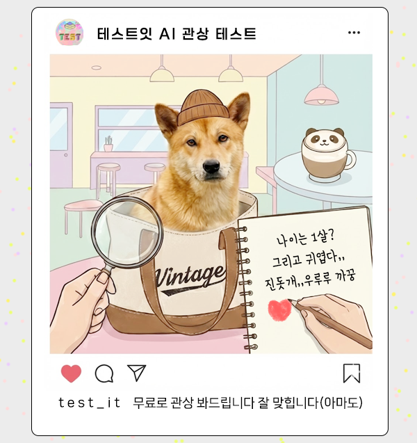
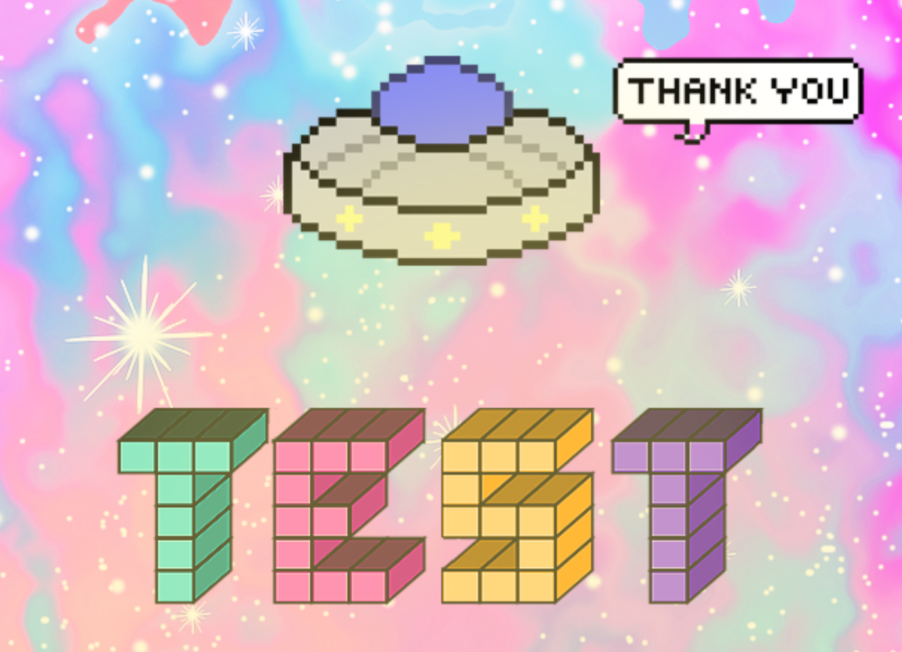

성격
얼굴
그외
사주
AI가 관상 데이터를 불러오고 있습니다...

테스트 시작하기
사진 업로드
정면 사진이 가장 정확합니다.
📸
사진 찍기 / 앨범 선택
🔒
안심하세요!
사진은 서버에 절대 저장되지 않습니다.
이 사진으로 분석하기

테스트잇
🔥
직업 로딩중...
관상 나이:
20
세
❤️
💬
✈️
테스트잇
#테스트잇 #관상테스트 #AI관상분석 #testit
📥 결과 이미지 저장
🔄 다시 하기
📂 다른 테스트 더보기
🔗 테스트 공유하기